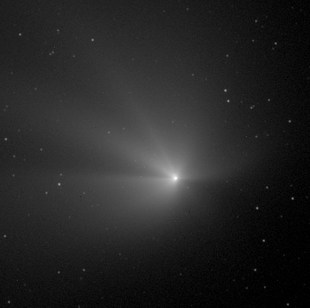

This exposure has been taken through a R filter; the exposure time was kept very short (10sec) in order not to saturate the central region of the comet. The images has been bias-subtracted and flatfielded (standard basic processing designed to correct the sensitivity variations of the detector), and is here displayed with a logarithmic grey-scale (O. R. Hainaut, K.J. Meech, J. Bauer and C.C. Petersen used the UH 2.2m telescope on Mauna Kea to obtain the data).
Be sure to display this image using setting your browser so that it can access as many colors as possible, e.g. "netscape -install"). This images has been further processed in order to enhance the jets (warning: 196k!)
Fri Nov 29 12:55:58 1996